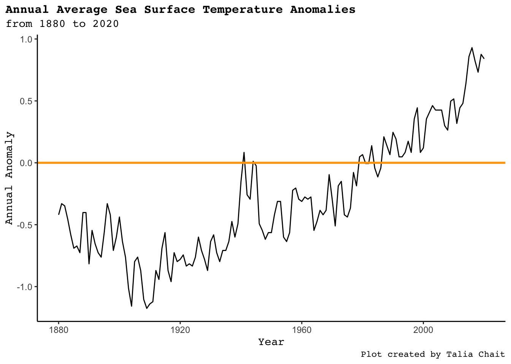
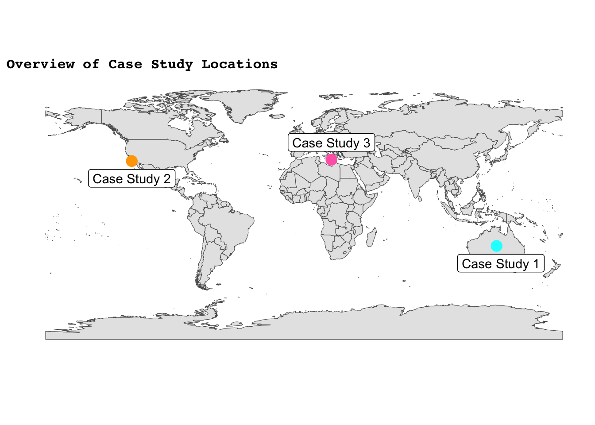

In this project, we looked at Ocean Health as an indicator of climate change. Climate change/global warming is the event in which air pollution, runoff, and other things cause our Earth’s temperature to increase. This is why there have been colder winters and hotter summers or more extreme weather events. You may be asking yourself, how do we know climate change is happening? Well, take a look at the graph below. This graph shows the annual temperature anomalies (or differences from the mean of 0). As seen, the graph has a positive correlation between time and temperature. This shows that over time there is an overall increase in sea surface temperatures.
Code
SST %>%group_by() %>%ggplot(aes(x = Year, y = Annual_anomaly)) +geom_line() +geom_hline(yintercept =0, color ="Orange", size =1) +theme_classic() +# scale_x_discrete(c(1880, 1890, 1900, 1910, 1920, 1930, 1940, 1950, 1960, 1970, 1980, 1990, 2000, 2010)) +theme(plot.title =element_text(family ="mono", face ="bold", size =12, ),plot.title.position ="plot",plot.caption =element_text(family ="mono"),plot.subtitle =element_text(family ="mono"),axis.title.y =element_text(family ="mono"),axis.title.x =element_text(family ="mono", vjust =0.5)) +labs(title ="Annual Average Sea Surface Temperature Anomalies",subtitle ="from 1880 to 2020", x ="Year",y ="Annual Anomaly",caption ="Plot created by Talia Chait")
Warning: Using `size` aesthetic for lines was deprecated in ggplot2 3.4.0.
ℹ Please use `linewidth` instead.

In order to dive deeper into the effects of climate change on ocean health, we considered 3 different locations all around the world that we are calling “case studies” all of which help answer our research questions: 1) How is ocean health changing over time? and 2) How is ocean health changing due to climate change?
The first case study looks into coral bleaching specifically in Australia, where the great barrier reef is, and tackles the effects of La Niña vs El Niño. The second case study looks into chemicals off the coast of Santa Barbara, California, USA to take a different approach on how ocean health is chaning over time. The third case study looks into fish populations in the Mediterranean Sea as an indicator of ocean health. The tabs on this website correspond to each of the case studies, so please click on whichever tab you are most interested in to learn more about that topic!
Code
world <-ne_countries(scale ="medium", returnclass ="sf")class(world)
[1] "sf" "data.frame"
Code
ggplot(data = world) +geom_sf() +annotate("point", x =134, y =-25, color ="cyan1", size =4) +annotate("label", x =137, y =-37, label ="Case Study 1") +annotate("point", x =-120, y =34, color ="orange", size =4) +annotate("label", x =-120, y =22, label ="Case Study 2") +annotate("point", x =19, y =35, color ="hotpink", size =4) +annotate("label", x =19, y =47, label ="Case Study 3") +theme_classic() +labs (y ="", x ="",title ="Overview of Case Study Locations") +theme(plot.title =element_text(face ="bold"))

Now you may be asking, well why is this important or what is the big deal looking into ocean health. Well, from the three case studies (PUT CONCLUSION HERE!)